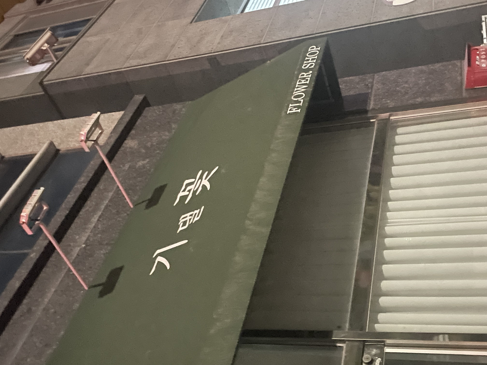
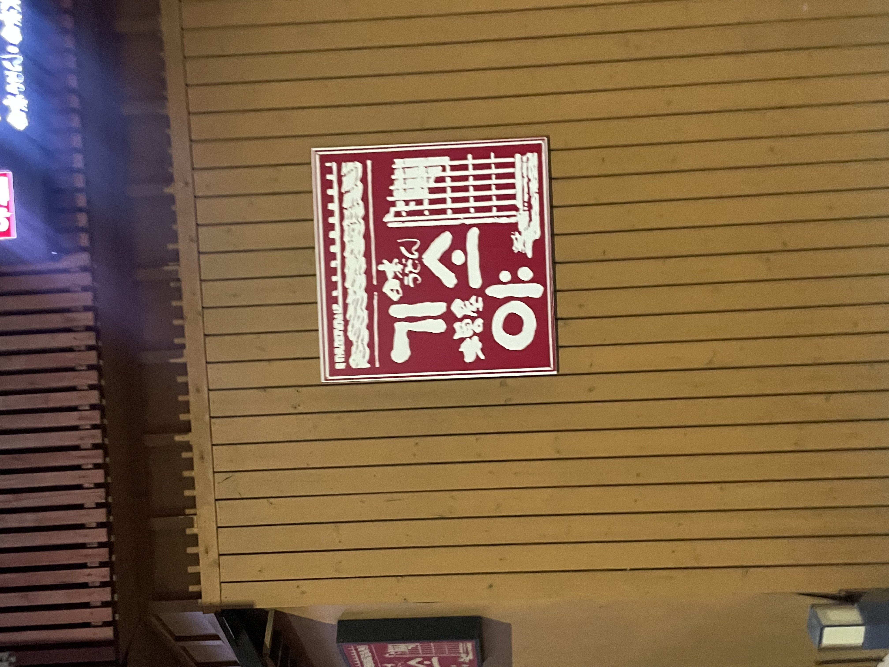
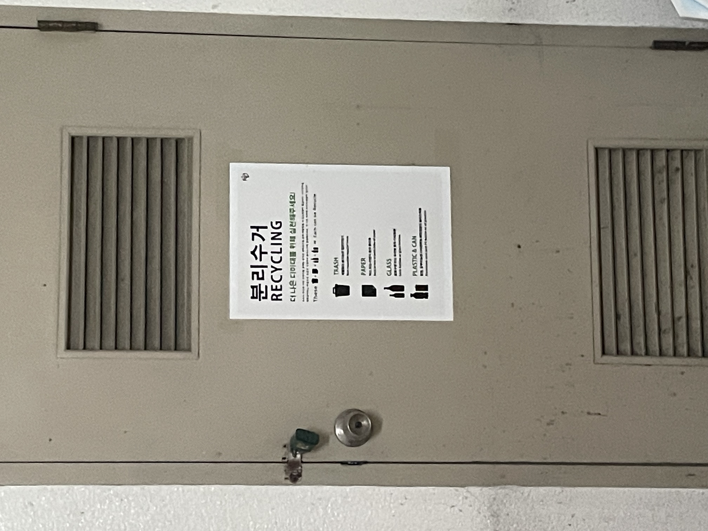

첫 번째 사진
기댈 꽃의 읽는 발음으로 기댈 곳이라는 단어를 동시에 떠오르게 했다. 처음 봤을 때는 아무 생각 없이 꽃이라는 글자만 보고 지나쳤는데 숨은 뜻이 있어서 이 가게에 대해서 더 관심이 생겼다. 기댈 꽃이라는 이름을 어떻게 생각하게 되었는지 궁금하다.
두 번째 사진
기소야가 무슨 뜻인지 궁금하여서 알아보니까 일본 기후현에 있는 한 지명의 합성어라고 한다. 같은 회사에서 기소야말고도 신기소, 소노야 라는 가게도 함께 운영한다. 앞서 다른 가게의 이름도 설명했듯이 외래어를 사용한다. 외래어라서 입에 붙지 않고 한 번에 떠오르지 않아서 이용하기에 불편한 점이 있을 수 있다.
세 번째 사진

과도한 줄임말을 사용하여서 보기에 불편하다. 그리고 엘리베이터tv 라는 특징도 잘 보이지 않는다. 엘쓸신잡이라는 줄임말 말고 다른 좋은 제목은 뭐가 있을지 더 고민해 보고 싶다.
네 번째 사진
분리수거에 대한 설명이 적힌 포스터이다. 외국어를 남용하여 해석하기에 불편함이 있을 수 있다. 위치 특성상 한국인이 더 많으니 한글을 덧붙이거나 한국어 버전 포스터를 붙이는 것도 좋다.